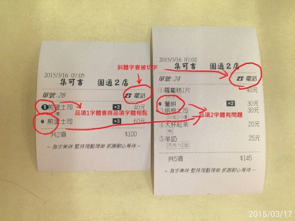
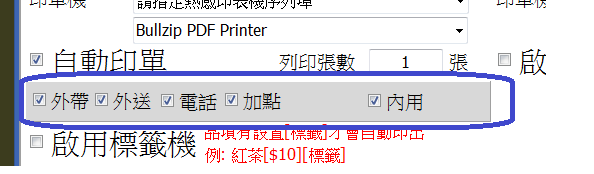
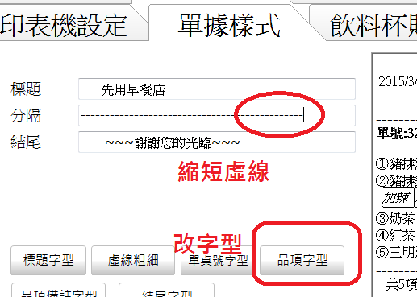

1.剩餘數量於加點時不會扣除.
2.自動印單是否可自選 內用/外帶/外送/電話 印單與否.
3.併單功能 於多張時是否可自選那些單要合併.因有時滿桌時會有不同客人同一桌.如其中一位加點.將形成須選單合併.否則會全併在一起.
4.如下圖.不知是否是我設定有問題.感謝回答.

1.剩餘數量於加點時不會扣除.
2.自動印單是否可自選 內用/外帶/外送/電話 印單與否.
3.併單功能 於多張時是否可自選那些單要合併.因有時滿桌時會有不同客人同一桌.如其中一位加點.將形成須選單合併.否則會全併在一起.
4.如下圖.不知是否是我設定有問題.感謝回答.

1.確實如此 已經修正 請至首頁下載更新
2.自動列印下方可勾選是否自動印單

3.列入修改參考
4.品項部分
請用"標楷體" "微軟正黑"或"新細明體"試試
字被裁斷問題 ,請縮短虛線看看
